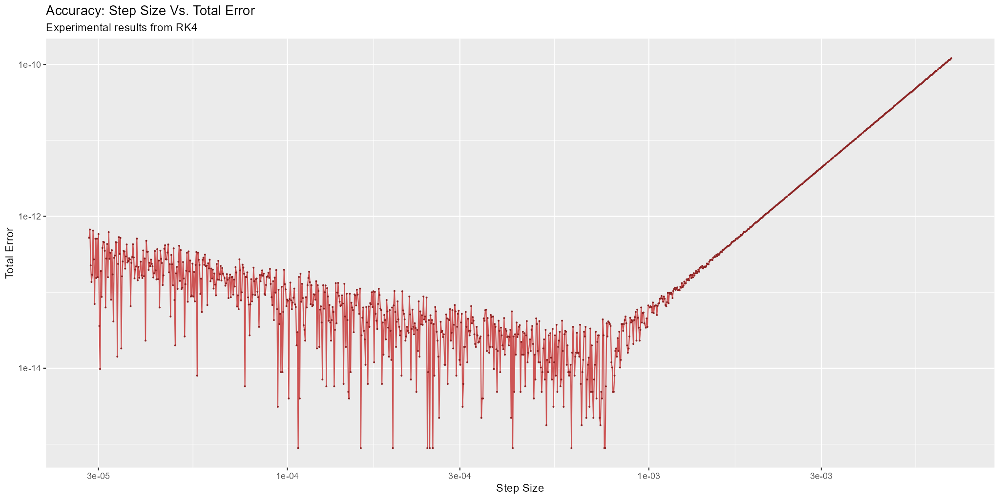

Runge-Kutta Step Size and Accuracy
A MRKISS Library Example Program
| Author: | Mitch Richling |
| Updated: | 2025-09-04 13:34:20 |
| Generated: | 2025-09-05 17:01:23 |
Copyright © 2025 Mitch Richling. All rights reserved.
Table of Contents
1. Results
The code for this example is found in examples/step_too_far.f90.
Additionally the code may be found at the end of this document in the section Full Code Listing.
In this example we solve a simple equation with various step sizes in order to observe the relationship between step size and accuracy.
The system we solve: \[ y'(t)=e^t + y(t) \,\,\,\mathrm{with}\,\,\, y(0)=0 \]
We can solve this equation symbolically: \[ y(t) = te^t \]
By construction, the truncation error for an RK method decreases as the step size decreases. Round-off error on the other hand increases as the step size decreases. Total error is the sum of truncation and round-off error. In this experiment we directly measure total error. For moderate step sizes we observe truncation error dominating the total error. As the step size gets smaller, we see the total error continue to improve as expected; however, the nice smooth response curve begins to roughen up a bit with what looks like random noise. Eventually we reach small enough step sizes that round-off error begins to dominate the results, and accuracy degrades as step size continues to decrease. The point at which this happens is very much dependent upon the RK method, the problem, and how both are is implemented.
Here is a log-log plot of our measured results:

We can statistically decompose the total error into truncation and round-off components. The results look something like this:
In the above graph notice the distinct difference between the behavior of truncation and round-off errors in terms of variance in the residual distribution. While it is not always the case, it's a pretty common occurrence to see higher variance in round-off error than truncation error in practice.
Truncation error only impacts the accuracy of \(\mathbf{y}\), but round-off error impacts both \(\mathbf{y}\) and \(t\). For fixed step size algorithms round-off errors in \(t\) may be greatly reduced by computing each \(t\) as a product instead of a running sum. Here is a glimpse of the impact of step size on \(t\) round-off:
2. Full Code Listing
2.1. Fortran Code
program step_too_far use :: mrkiss_config, only: rk, istats_size use :: mrkiss_solvers_wt, only: fixed_t_steps use :: mrkiss_utils, only: print_solution use :: mrkiss_erk_kutta_4, only: a, b, c implicit none integer, parameter :: deq_dim = 1 real(kind=rk), parameter :: y_iv(deq_dim) = [0.0_rk] real(kind=rk), parameter :: t_iv = 0.0_rk real(kind=rk), parameter :: param(1) = [0.0_rk] real(kind=rk), parameter :: t_end = 1.0_rk real(kind=rk) :: solution(1+2*deq_dim, 1) integer :: status, istats(istats_size), sso, num_pts logical :: append append = .false. do sso = 1000,2100 num_pts = 1.005_rk ** sso print '("sso=",i4," num_pts=",i0)', sso, num_pts call fixed_t_steps(status, istats, solution, eq, t_iv, y_iv, param, a, b, c, max_pts_o=num_pts, t_end_o=t_end) call print_solution(status, solution, filename_o="step_too_far.csv", tag_o=sso, append_o=append) append = .true. end do contains subroutine eq(status, dydt, t, y, param) integer, intent(out) :: status real(kind=rk), intent(out) :: dydt(:) real(kind=rk), intent(in) :: t real(kind=rk), intent(in) :: y(:) real(kind=rk), intent(in) :: param(:) dydt = [ exp(t) + y(1) ] status = 0 end subroutine eq end program step_too_far
2.2. R Code
The images were produced with R.
solDat <- fread("step_too_far.csv") %>% mutate(errt = abs(1-t), y = y1, erryat = abs(y-exp(t)), erry = abs(y-exp(1)), sso = tag, pts = 1.005^sso, delta = 1/(pts-1)) %>% filter(errt>0 & erryat>0 & erry>0) # Plot the raw results. gp <- ggplot(solDat) + geom_line( aes(x=delta, y=erry), col='indianred3') + geom_point( aes(x=delta, y=erry), col='brown4', size=0.25) + scale_y_log10() + scale_x_log10() + labs(title='Accuracy: Step Size Vs. Total Error', subtitle='Experimental results from RK4 ', x='Step Size', y='Total Error') ggsave(filename='step_too_far.png', plot=gp, width=2*1024, height=1023, units='px', dpi=150) # Compute the log transformed linear regression for the truncation error dominated part of the dataset treDat <- solDat %>% transmute(x=delta, y=erryat) %>% filter(x>0 & y>0) %>% mutate(xt=log(x), yt=log(y)) %>% filter(x>2e-3) treFit <- lm(yt ~ xt, data=treDat) treDat <- treDat %>% mutate(yf=exp(coef(treFit)[1])*x^(coef(treFit)[2])) # Note the value for 'xt' in the fit will be the order of the RK method used. # This is a practical way experimentally to compute the order for a RK method. print(summary(treFit)) ## ggplot(data=treDat, aes(x=x)) + ## geom_line(aes(y=y), col='red') + ## geom_line(aes(y=yf), col='blue') + ## scale_y_log10() + ## scale_x_log10() # Compute the log transformed linear regression for the round-off error dominated part of the dataset roeDat <- solDat %>% transmute(x=delta, y=erryat) %>% filter(x>0 & y>0) %>% mutate(xt=log(x), yt=log(y)) %>% filter(x<2e-4) roeFit <- lm(yt ~ xt, data=roeDat) roeDat <- roeDat %>% mutate(yf=exp(coef(roeFit)[1])*x^(coef(roeFit)[2])) ## ggplot(data=roeDat, aes(x=x)) + ## geom_line(aes(y=y), col='red') + ## geom_line(aes(y=yf), col='blue') + ## scale_y_log10() + ## scale_x_log10() gp <- ggplot() + geom_density(data=treDat, aes(x=y-yf, fill='Truncation Error'), alpha=0.75, linewidth=0) + geom_density(data=roeDat, aes(x=y-yf, fill='Round-off Error'), alpha=0.5, linewidth=0) + scale_fill_manual(name='Error Type', values=c('Truncation Error' = 'goldenrod', 'Round-off Error' = 'darkolivegreen3')) + labs(title='Truncation Vs. Round-off Residual Distribution', subtitle='Experimental results from RK4.', x='Error', y='') + theme(axis.text.y=element_blank()) ggsave(filename='step_too_far_trdst.png', plot=gp, width=1024, height=600, units='px', dpi=100) # Add total, truncation, round-off error to our solution data and plot everything. solDat <- solDat %>% mutate(erryattre=exp(coef(treFit)[1])*delta^(coef(treFit)[2]), erryatroe=exp(coef(roeFit)[1])*delta^(coef(roeFit)[2]), erryattoe=erryattre+erryatroe) gp <- ggplot(data=solDat, aes(x=delta)) + geom_line(aes(y=erryattre, col='Mean Truncation Error'), linewidth=5, alpha=0.7) + geom_line(aes(y=erryatroe, col='Mean Round-off Error'), linewidth=5, alpha=0.7) + geom_line(aes(y=erryattoe, col='Mean Total Error'), linewidth=3) + geom_point(aes(y=erryat, col='Total Error'), size=0.5) + scale_y_log10(limits=range(solDat$erryat)) + scale_x_log10() + scale_colour_manual(name='Error Type', values=c('Mean Total Error' = 'darkorchid3', 'Mean Truncation Error' = 'goldenrod', 'Mean Round-off Error' = 'darkolivegreen3', 'Total Error' = 'indianred3')) + labs(title='Error Vs. Step Size', subtitle='Experimental results from RK4 illustrating total error as a sum of round-off and truncation errors.', x='Step Size', y='Errors') ggsave(filename='step_too_far_mean.png', plot=gp, width=1024, height=600, units='px', dpi=100) # Compute the log transformed linear regression for t troeDat <- solDat %>% transmute(x=delta, y=errt) %>% filter(x>0 & y>0) %>% mutate(xt=log(x), yt=log(y)) troeFit <- lm(yt ~ xt, data=troeDat) troeDat <- troeDat %>% mutate(yf=exp(coef(troeFit)[1])*x^(coef(troeFit)[2])) gp <- ggplot(data=troeDat, aes(x=x)) + geom_line(aes(y=yf, col='Mean Round-off Error'), alpha=0.7, linewidth=10) + geom_point(aes(y=y, col='Total Error'), size=0.5) + scale_y_log10() + scale_x_log10() + scale_colour_manual(name='Error Type', values=c('Mean Round-off Error' = 'darkolivegreen3', 'Total Error' = 'indianred3')) + labs(title='Independent Variable Error Vs. Step Size', subtitle='Experimental results from RK4.', x='Step Size', y='Errors') ggsave(filename='step_too_far_tfit.png', plot=gp, width=1024, height=600, units='px', dpi=100)